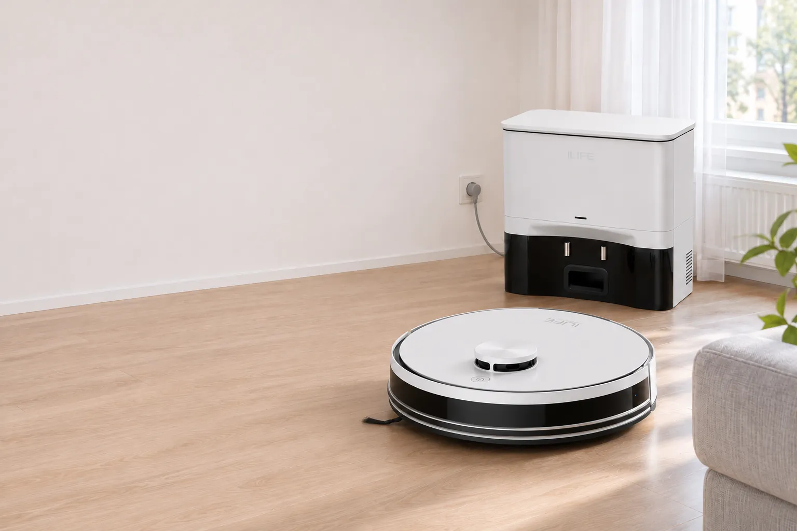
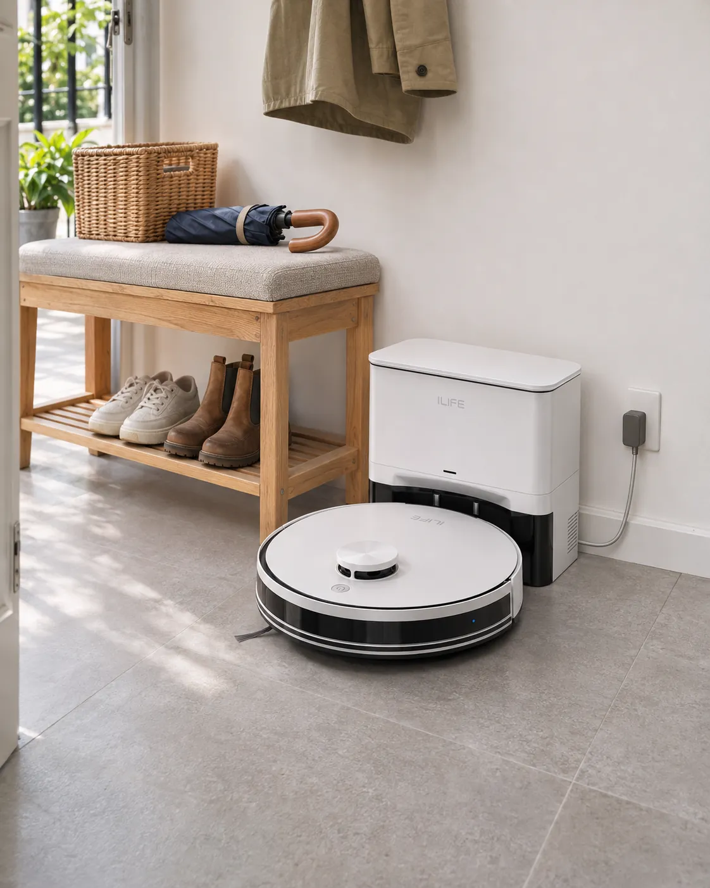
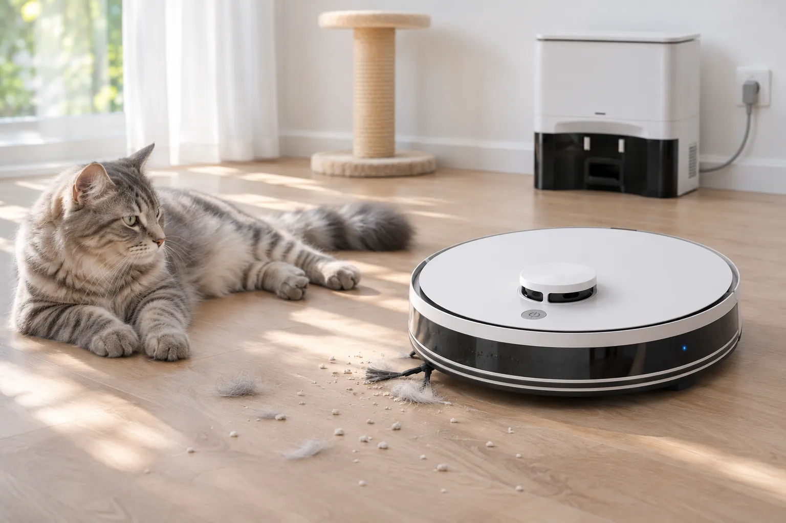
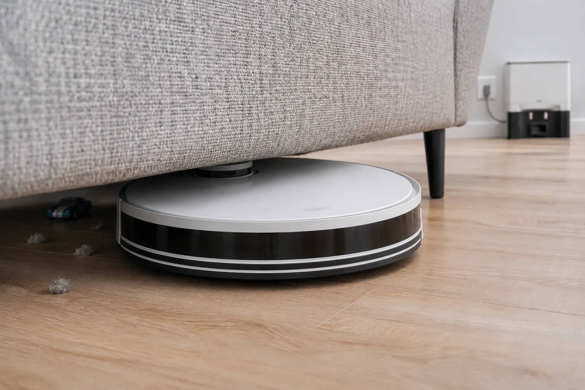
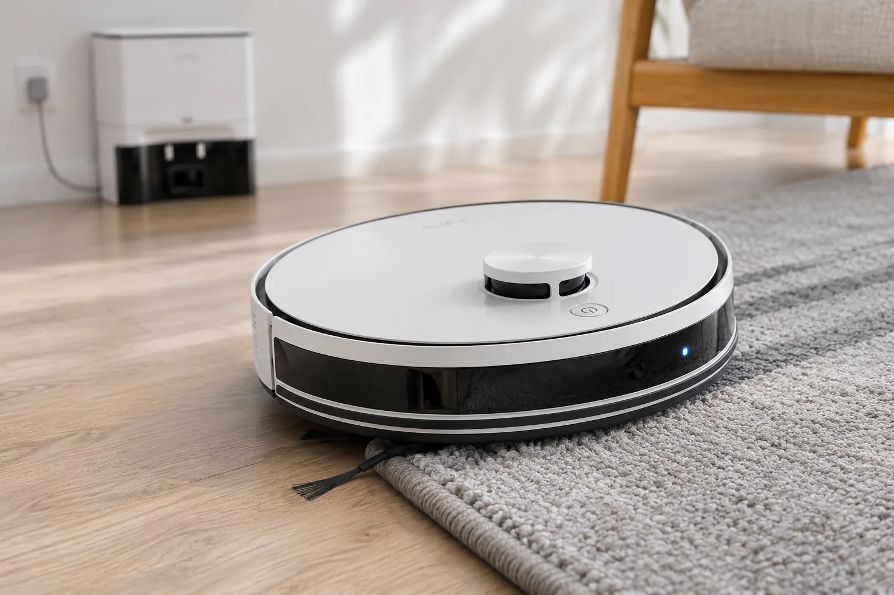
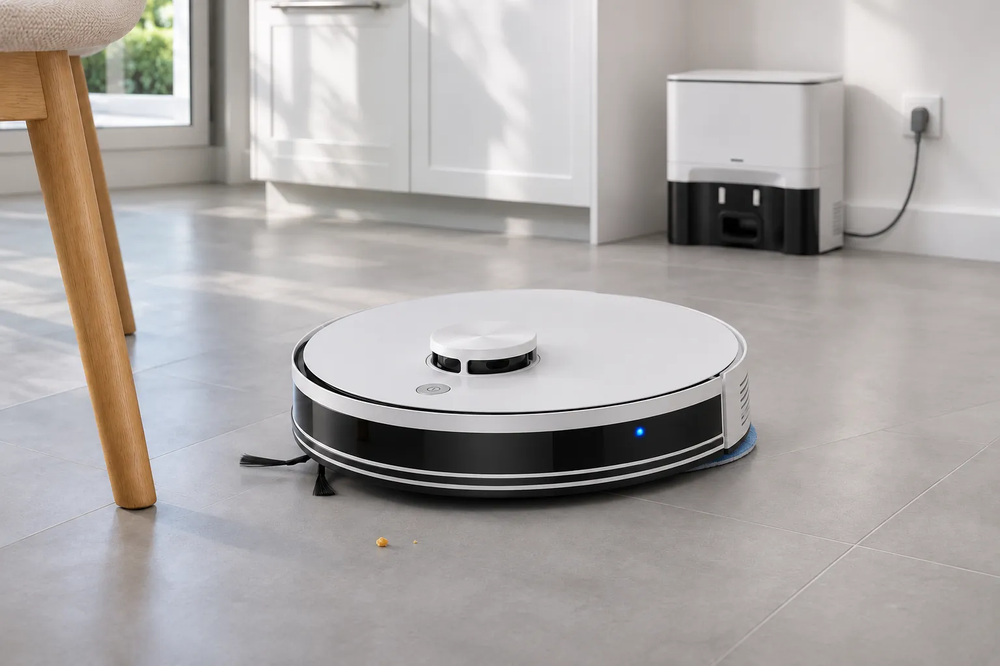
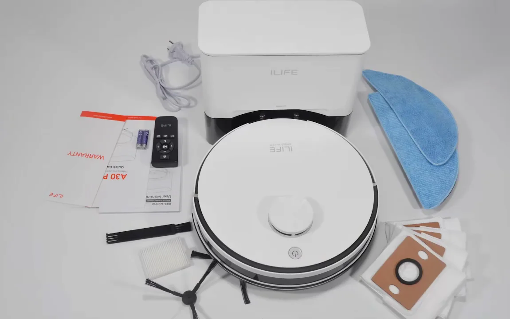
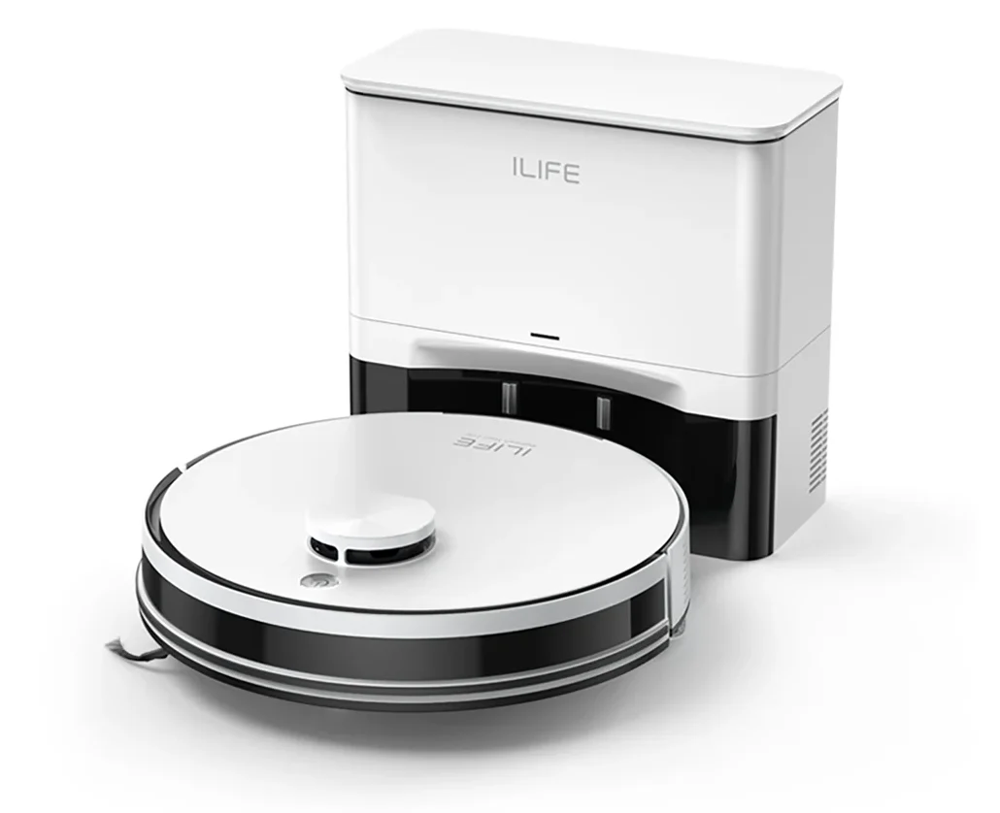

ILIFE A30 Pro, робот-пилосос зі станцією самоочищення
Ви більше не пилососите
Робот сам будує карту квартири і прибирає за розкладом, а станція забирає з нього пил. Ваша частина роботи: раз на кілька тижнів викинути повний мішок.
5 890 грнабо 500 zł, з ПДВ. До знижки було 6 896 грн.
Замовити на AliExpress- 4,9 із 5 у 953 відгуках
- 10 000+ продано
- 3-6 днів зі складу в Польщі, безкоштовно
Спершу він вивчить вашу квартиру
На даху робота обертається лазерний далекомір (LiDAR). Під час першого прибирання він креслить план: стіни, двері, меблі. Далі все керування відбувається на цьому плані в застосунку ILIFE Clean.
Готовий до першого виїзду
Прибрано0з 51,6 м²
Час0хв
Карт можна зберегти до п'яти, наприклад, для кожного поверху будинку. Час на схемі розраховано за відгуком покупця: 60 м² приблизно за 30 хвилин.
Контейнер вивантажує станція, а не ви
Щойно робот заїхав на базу, станція за 15 секунд висмоктує все з його контейнера в мішок. Ви не бачите пилу, не струшуєте фільтр над відром і не чхаєте.
- Мішок у станції
- 2,5 л
- Контейнер робота
- 0,2 л
- Всмоктування станції
- 12 000 Па
- Мішків у комплекті
- 5
Один мішок вміщує понад дванадцять повних контейнерів. Продавець обіцяє до 7 тижнів без заміни, а п'яти мішків з коробки вистачить на кілька місяців. Вивантажувати можна після кожного прибирання, після двох чи трьох, а на ніч є режим «Не турбувати».

Прибирає там, куди ви не дотягуєтесь

Для дому з котом чи собакою
Бічна щітка з захистом від намотування і основна щітка 2-в-1 збирають шерсть, наповнювач і крихти. Дрібний пил тримає HEPA-фільтр.

9,5 см у висоту
Пролазить під ліжко, диван і шафу, якщо під ними є хоча б 10 см. Саме там збирається найбільше пилу, до якого руки доходять раз на рік.

Килим? Потужність на максимум
Робот сам помічає килим і піднімає всмоктування до 10 000 Па, а на ламінаті повертається до звичайного режиму. Пороги до 2 см переїжджає без допомоги.

Пилососить і протирає за один виїзд
Бак 2-в-1: 200 мл під пил і 200 мл під воду, три рівні подачі води. Серветка з мікрофібри знімає пил і сліди після пилососа, а в застосунку можна вказати, де мочити не треба.
До 180 хвилин
Акумулятор 2900 мА·год, до 180 м² за заряд. Розрядився посеред прибирання - доїде на базу, зарядиться і продовжить.
Три способи керувати
Застосунок ILIFE Clean, голосом через Alexa чи Google Assistant або пультом з коробки. Пульт працює і без Wi-Fi.
Не падає зі сходів
Датчики перепаду висоти тримають його подалі від сходів, бампер і інфрачервоний датчик пом'якшують зустріч з меблями.
Що варто знати до замовлення
Ми прочитали інструкцію і пів тисячі відгуків. Ось що в них повторюється найчастіше.
Він протирає, а не миє
Серветка знімає пил і легкі сліди. Засохлу пляму від соку вона не відмиє. Піднімати серветку на килимах робот не вміє, тому для килима зніміть тримач або намалюйте зону без миття.
Дрібниці з підлоги - прибрати
Лазер добре бачить стіни й меблі, але камери в робота немає. Кабелі, шкарпетки й іграшки він не розпізнає і може в них заплутатися.
Пороги до 2 см, ворс до 1,8 см
Це межі з інструкції. Високий поріг, пухнастий килим чи бахрома зупинять робота, бахрому краще підгорнути.
Станція гучна 15 секунд
Сам робот на звичайній потужності доволі тихий, а вивантаження звучить як звичайний пилосос. На ніч вмикайте «Не турбувати».
180 хвилин - на тихому режимі
На звичайній потужності покупці пишуть про півтори-дві години. Повна зарядка займає до 5 годин.
Wi-Fi тільки 2,4 ГГц
Більшість роутерів роздають і 2,4, і 5 ГГц, тож проблем зазвичай немає. Якщо вдома лише мобільний інтернет, залишиться пульт.
Одна станція на один поверх
Карт можна зберегти п'ять, але база одна. На іншому поверсі робот прибере, а от вивантажувати пил повернеться туди, де стоїть станція.
953 відгуки, середня оцінка 4,9
За такі гроші це справді дивовижно. Прибирає ретельно, акуратно будує карту кімнати, доволі тихий. Від миття краще багато не чекати, але мені й потрібен був саме пилосос. Заряджається швидко. Замовлення - позавчора, посилка - сьогодні вранці.
Ідеальний для собачої шерсті й лап. Серветкою добре протирати легкий бруд, для сильного вона не підходить. Але за таку ціну якість просто знахідка. Станція компактна і все вивантажує в мішок.
Доставили за два робочі дні. Одразу запустили карту квартири, і робот впорався без проблем, навіть з ніжки сушарки сам зліз. 60 квадратних метрів прибрав приблизно за 30 хвилин.
Пилососить ідеально, карта кімнат працює добре. Але з серветкою це радше протирання, ніж миття. І 180 хвилин - перебільшення: хвилина роботи забирає приблизно відсоток батареї.
Застосунок працює чудово, робот добре робить свою справу, навіть миття пристойне. Єдиний мінус: щоб прибрати інший поверх, треба переносити не тільки робота, а й базу. За таку ціну раджу.
Відгуки з AliExpress у нашому перекладі, трохи скорочені.

Що в коробці
- Робот-пилосос
- Станція самоочищення з кабелем
- Бак 2-в-1 для пилу і води
- Тримач серветки
- 2 серветки з мікрофібри
- 5 мішків для пилу
- Пульт
- Запасна бічна щітка
- Запасний HEPA-фільтр
- Щіточка для чищення
- Інструкція
Коробка 41 × 39 × 28 см, 7,7 кг. Вилка європейська, 220-240 В, підходить до звичайної української розетки.
Характеристики
З інструкції A30 Pro і зі сторінки товару. Те, що відомо лише зі слів продавця, позначено.
Прибирання
- Всмоктування
- до 10 000 Па продавець
- Рівні потужності
- 4: тихий, стандарт, сильний, максимум
- Килими
- автоматичне підсилення
- Навігація
- лазерна LiDAR, до 5 карт
- Режими
- авто, кімнати, зона, точкове 1,5 × 1,5 м, по краю
- Обмеження в застосунку
- заборонені зони, зони без миття, віртуальні стіни
- Пороги
- до 20 мм
- Ворс килима
- до 18 мм
- Миття
- серветка, 3 рівні подачі води
- Фільтр
- HEPA
Робот
- Розміри
- 330 × 330 × 95 мм
- Вага
- 2,7 кг
- Контейнер для пилу
- 0,2 л
- Бак для води
- 0,2 л
- Акумулятор
- Li-ion 14,4 В, 2900 мА·год, 41,76 Вт·год
- Робота від заряду
- до 180 хв, до 180 м²
- Зарядка
- до 300 хв
- Шум
- до 80 дБ продавець
Станція
- Розміри
- 285 × 145 × 253 мм
- Вага
- 2,0 кг
- Мішок
- 2,5 л, одноразовий
- Без заміни мішка
- до 7 тижнів продавець
- Всмоктування
- 12 000 Па продавець
- Живлення
- 220-240 В, 50/60 Гц
Зв'язок і гарантія
- Мережа
- Wi-Fi 2,4 ГГц, Bluetooth
- Керування
- ILIFE Clean, Alexa, Google Assistant, пульт
- Гарантія
- 2 роки продавець
Цифру 10 000 Па вказує продавець цього лота. В інструкції сили всмоктування немає, а в деяких інших магазинах A30 Pro продають з позначкою 5000 Па.
Ціна і доставка
Робот їде зі складу AliExpress у Польщі.
- Захист покупця AliExpress. Якщо посилка не прийде або товар не відповідатиме опису, відкриваєте спір і повертаєте гроші.
- Оплата на AliExpress. Ця сторінка нічого не продає і не бачить ваших даних.
- Магазин ILIFEPL Store. 98,7% позитивних відгуків про продавця.
- ILIFE A30 Pro зі станцією
- 500,39 zł5 890 грн
- Доставка з польського складу
- 0 złбезкоштовно
- Разом, з ПДВ
- 500,39 zł
- Їде 3-6 днів: замовлене 3 листопада приходить 6-9 листопада.
- ПДВ уже в ціні, мита немає.
- У Польщі можна розбити оплату карткою на 3 × 166,80 zł без переплати.
- За цією ціною - не більше одного робота на покупця.
Ціни і терміни перевірено 3 листопада 2026 року для доставки в Польщу. Ціни на AliExpress змінюються, актуальну ви побачите після переходу.
Питання
Чи працює без інтернету?
Так, пультом з комплекту: старт і пауза, напрям руху, потужність, прибирання змійкою, по краю і точкове, повернення на станцію. Карту, зони і розклад налаштовують лише в застосунку, і для нього потрібен Wi-Fi 2,4 ГГц.
Що буде під час відключення світла?
Робот працює від власного акумулятора, тож прибирання, яке вже почалося, відключення не зупинить. Заряджатися і вивантажувати пил станція почне, коли повернеться живлення.
Як часто міняти мішок, щітки і фільтр?
За інструкцією мішок і HEPA-фільтр міняють раз на 1-1,5 місяця, бічну щітку і серветки раз на 3-6 місяців, основну щітку раз на пів року. П'ять мішків і запасний фільтр уже в коробці, а сумісні витратні матеріали для A30 Pro продаються на AliExpress окремо.
Чи впорається з шерстю тварин?
Так, про шерсть у відгуках пишуть часто і переважно добре. Шерсть і наповнювач він збирає добре, а бічна щітка має захист від намотування. Довге волосся з основної щітки все одно час від часу доведеться знімати, для цього в комплекті є інструмент для чищення.
Наскільки він гучний?
Продавець вказує до 80 дБ на максимальній потужності. Покупці пишуть, що на звичайному режимі робот доволі тихий, а голосно звучить 15-секундне вивантаження пилу в станцію. Для ночі є режим «Не турбувати».
Чи підійде для великої квартири або будинку?
За один заряд робот прибирає до 180 м². Якщо площа більша, він сам повернеться на зарядку і продовжить. Для будинку на кілька поверхів можна зберегти до п'яти карт, але станція буде одна, і робота між поверхами треба переносити.
Що з гарантією?
Продавець указує гарантію 2 роки. Спершу пишіть продавцю в чат AliExpress, а якщо питання не вирішується, відкривайте спір через захист покупця.
Наступне прибирання - без вас
5 890 грн за робота, станцію і п'ять мішків. Доставка з польського складу за 3-6 днів.
Замовити на AliExpress